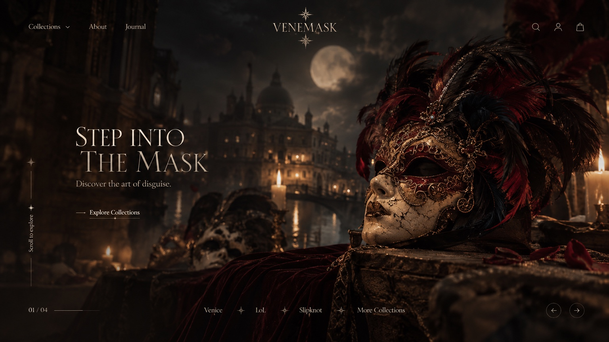
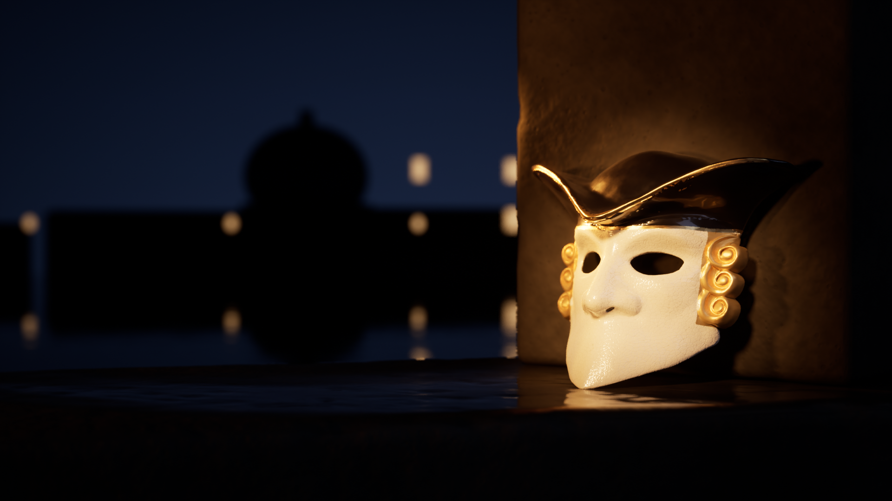
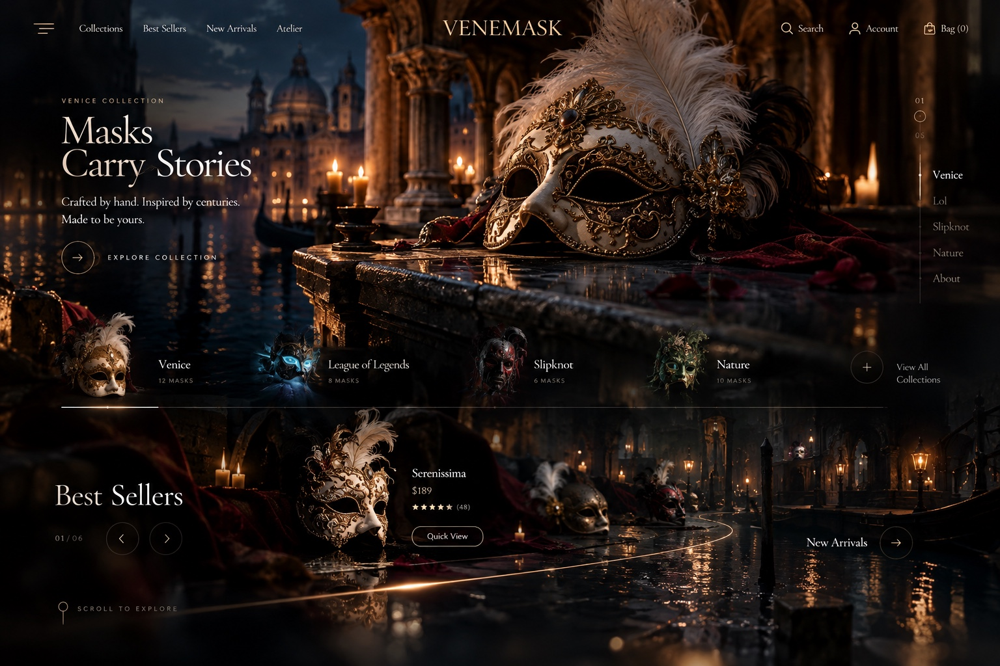
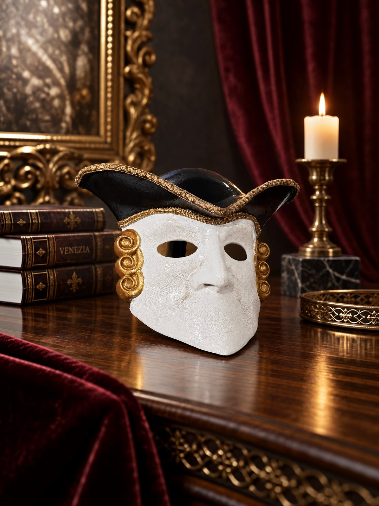
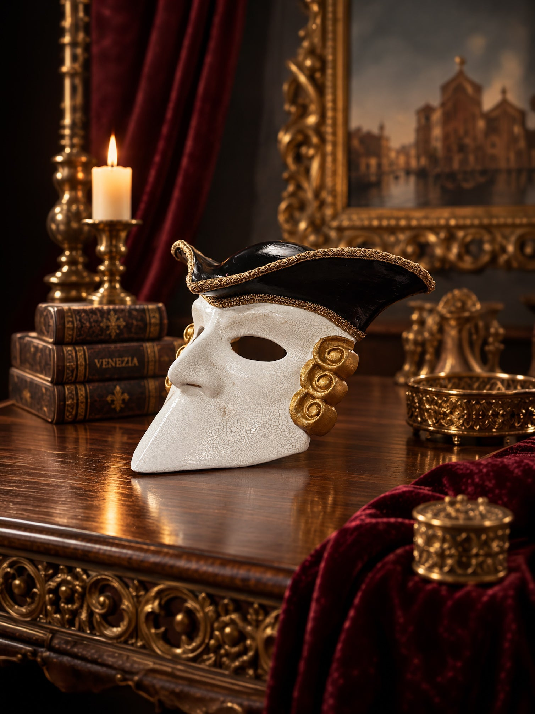
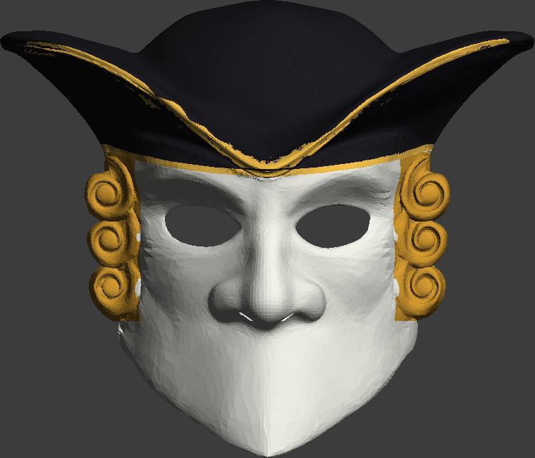
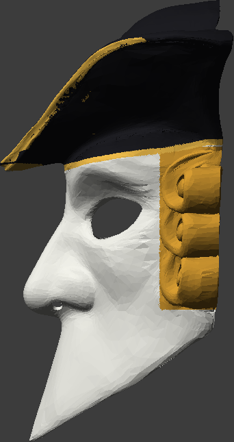
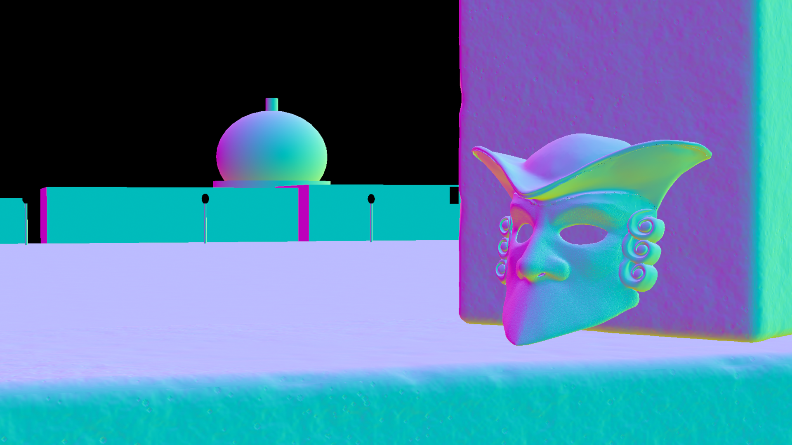
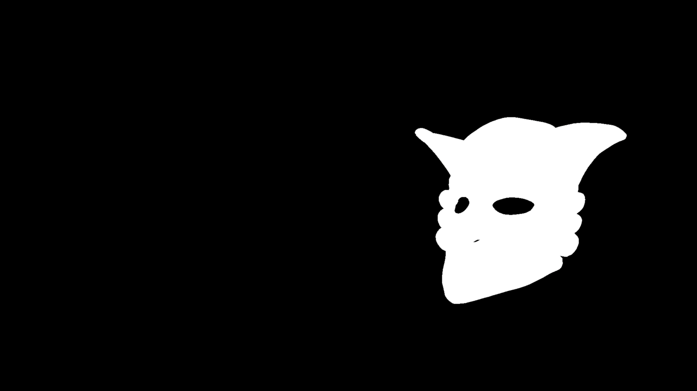
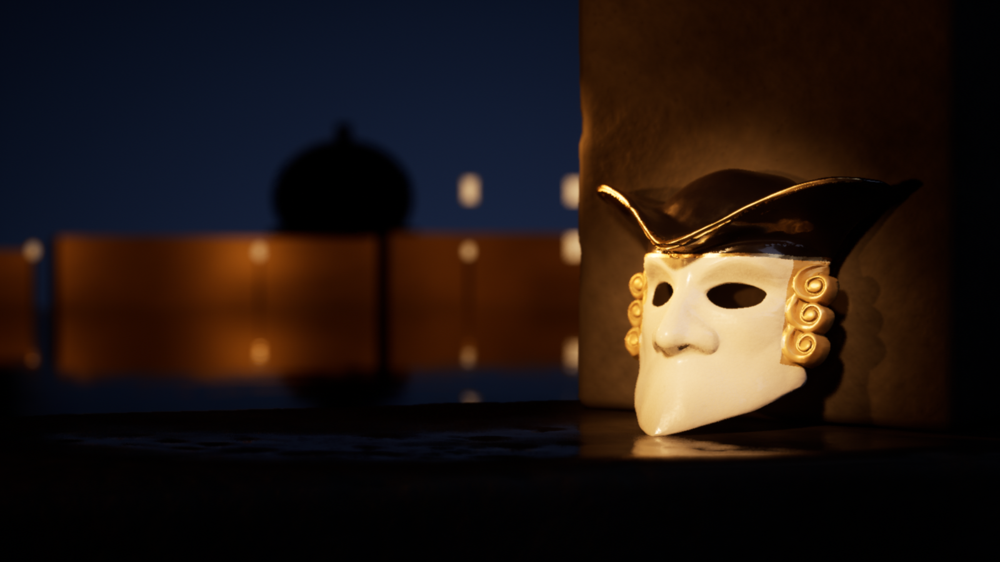

VENEMASK — Gate A · Hero
29 Ekim 2026 · Unreal Engine 5.8.1 · Path Tracer · 1920×1080 · 256 spp · OIDN denoise · Cine Camera 60 mm f/4
GATE A: FAIL — referans sınıfına henüz ulaşmadı
1 · Referans ↔ gerçek Unreal render (aynı genişlikte)



2 · Ürün doğruluğu: mağaza fotoğrafı ↔ render ↔ kaynak mesh




3 · Kontrol pass'leri



4 · Kontrol listesi
| Madde | Durum | Kanıt / not |
|---|---|---|
| Gerçek ürün kimliği | PASS | Casanova Bauta Mask — Eyes Wide Shut Inspired · id 7591523549267 · SKU 17629779130_3E08 · 3799.00 (mağaza para birimi) |
| Geometri (form, göz açıklıkları, burun delikleri, 3+3 bukle, şapka kenarı) | PASS | Kendi baskı STL'iniz, şekil değiştirilmedi; yalnızca boya sınırlarında üçgen bölme (yüzey aynı). Normal pass'te görülür. |
| Boya bölgeleri (beyaz yüz, siyah lake şapka, altın bukleler) | PASS | Bukle sınırı derinlik ölçümüyle (inspect/curl_depth.png) belirlendi. |
| Altın şerit örgü (braid) | UNVERIFIED | Gerçek üründe uygulanan kumaş şerit; STL'de yok. Kenarda boyalı altın bant olarak yaklaşık gösterildi. |
| Craquelure deseni | UNVERIFIED | Prosedürel; gerçek ürünün çatlak dokusu taranmadı. |
| Fiziksel oturma | PASS | Çene taşa değiyor; maske serbest duramıyor (ağırlık merkezi tabanın arkasında), bu yüzden taş paye üzerine 12° yaslandı. Temas yansıması ve gölgesi Path Tracer'dan. |
| Işık: sıcak key + sıcak rim + soğuk gökyüzü dolgusu | PASS | Spot key 2900 K, spot rim 2400 K, soğuk rect fill 8000 K, uzak fenerler 2200 K. |
| Gerçek lens / alan derinliği | PASS | Cine Camera 60 mm, f/4, odak 142 cm (göz hizası); bokeh ve sudaki fener yansımaları fiziksel. |
| Kompozisyon / negatif alan | KISMEN | Maske sağ üçte birde, sol tarafta gökyüzü + kubbe; başlık için yer var. Ön plandaki taş çok karanlık. |
| Ortam zenginliği (mimari detay, cephe ışığı, malzeme çeşitliliği) | FAIL | Karşı kıyı düz siyah kütleler; kemer/sütun/cephe detayı yok; paye yüzeyi düz. Referanslardaki katmanlı derinlik yok. |
| Taş malzemesi gerçekçiliği | FAIL | Prosedürel doku; taranmış (Megascans/Fab) taş kullanılmadı — yakın planda yapay görünüyor. |
5 · Referansla en büyük 3 fark
- Arka plan mimarisi: referanslarda ışıklı cepheler, kemerler ve kubbe dokusu var; bizim karşı kıyı düz kütle + fener bokehi.
- Taş ve yüzey dokusu: referanstaki ıslak, oyulmuş, yaşlı taş hissi yok; prosedürel dokular yakında plastik/mantar gibi okunuyor.
- Ön plan / katmanlar: ref 02'de bulanık ikinci maske, kadife ve kenar ışığı alan katmanlar var; bizde ön plan kararıyor.